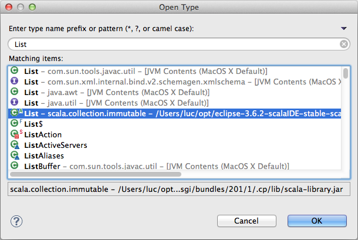

Navigating¶
Open type¶
The Open Type dialog used to find Java type also provide all defined Scala types. The shortcut is Ctrl-Shift-T or Cmd-Shift-T.
Hyperlinking¶
Hyperlinking to declaration is enable in the Scala editor.
It is activated by holding the Ctrl or the Cmd key, and hovering on variable, method or type. It became underlined and can be click to jump to its declaration.

Open declaration¶
In a similar way to hyperlinking, F3 can be used to the declaration of the element currently under the caret.